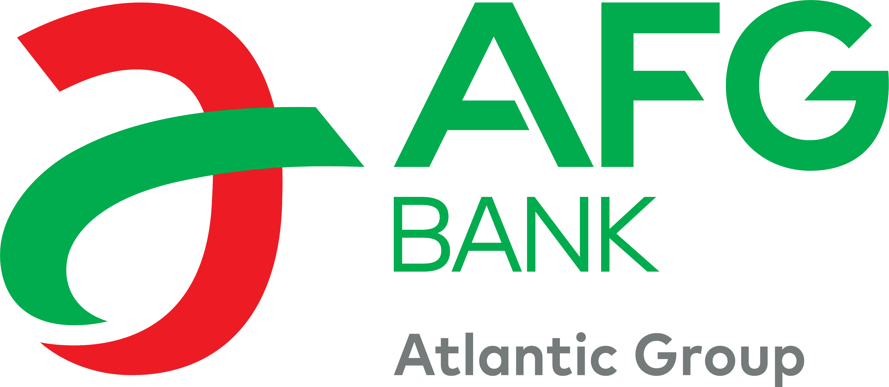

Il suffit parfois
d’un effort…
L’effort de faire
toujours mieux.
L’effort
d’écouter.
L’effort
de comprendre.
L’effort
d’accompagner.
L’effort
d’aller plus loin.
05
04
03
02
01
00
SEMAINE DU
SERVICE À LA CLIENTÈLE
Faire un effort de plus
pour nos clients
5 — 9 octobre 2026